Funzioni Principali
- Fotosintesi: processo metabolico primario
- Scambio gassoso: CO₂/O₂ per fotosintesi e respirazione
- Traspirazione: movimento dell’acqua e controllo termico
- Specializzazioni: protezione, sostegno, riproduzione
Morfologia Fogliare
Struttura della “Foglia Tipo” (Nomofillo)
Componenti Principali
- Lamina fogliare: superficie appiattita ed espansa
- Alto rapporto superficie/volume (condizioni favorevoli)
- Massimizzazione esposizione luminosa e scambi gassosi
- Picciolo: collegamento lamina-fusto
- Variabile in lunghezza o assente (foglia sessile)
- Graminacee: foglia a guaina
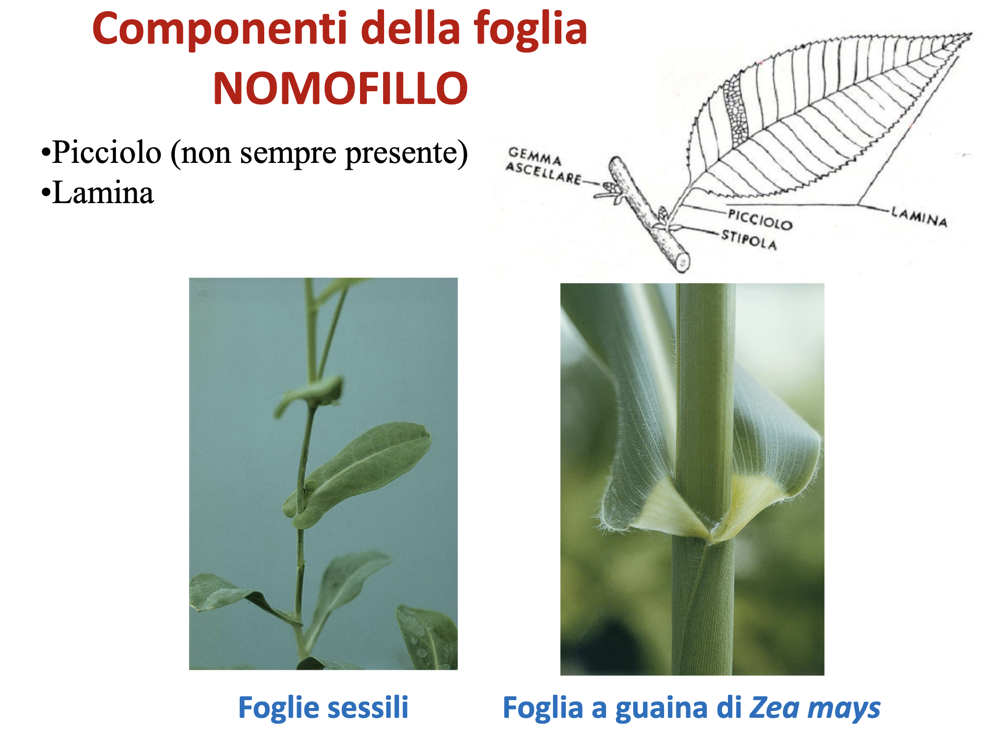
Tipologie Morfologiche
Foglie Semplici vs Composte
- Semplici: lamina unica indivisa
- Composte: suddivise in foglioline
- Palmate: foglioline da punto comune
- Pennate: foglioline lungo rachide centrale
Criterio di Distinzione
Gemma ascellare: discriminante fondamentale
- Presenza: alla base della foglia (semplice o composta)
- Assenza: alla base delle foglioline
- Ricordo fitomero: nodo + foglia con gemma + internodo
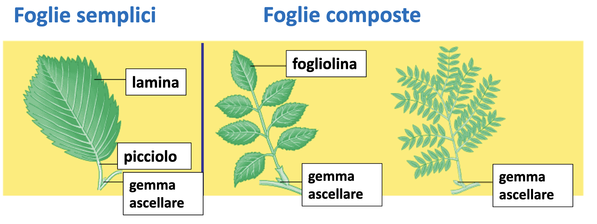 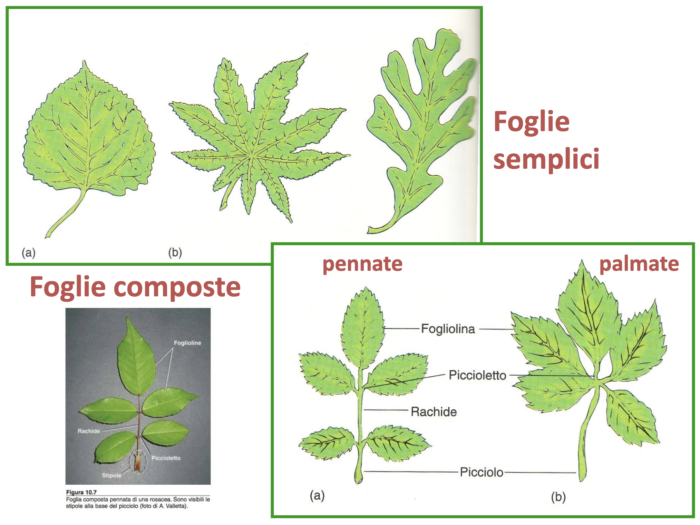
Forme e Margini Fogliari
- Forme: cordate, astate, peltate, sagittate
- Margini: liscio, seghettato, crenato
- Significato: caratteri tassonomici per identificazione
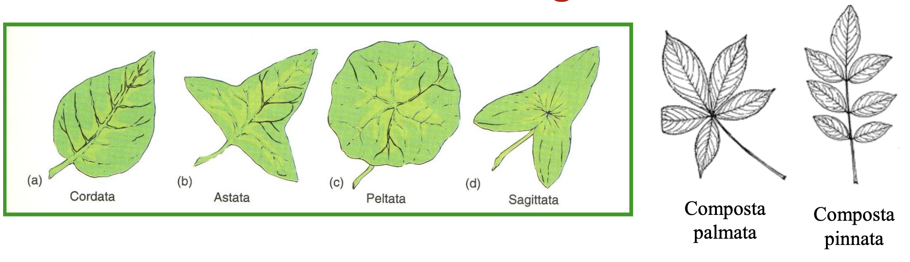
Variabilità Intraspecifica
- Fagiolo: foglie semplici e composte contemporaneamente
- Eucalipto: dimorfismo giovanile-adulto
- Fase giovanile: lamina arrotondata
- Fase adulta: lamina lanceolata
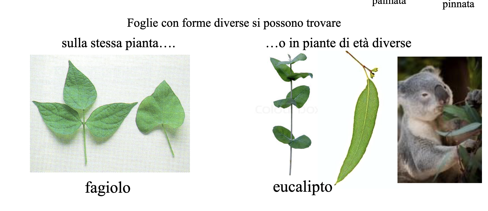
Sistema Nervaturale
Funzioni delle Nervature
- Contenuto: tessuti di conduzione (xilema e floema)
- Trasporto: linfa grezza (entrata) e elaborata (uscita)
- Distribuzione: rete capillare per tutta la lamina
Organizzazione per Gruppi Sistematici
Dicotiledoni - Nervature Reticolate
- Nervatura principale: centrale dominante
- Ramificazioni gerarchiche: 1°, 2°, 3°, 4° ordine
- Organizzazione: reticolo ottimizzato per distribuzione e raccolta
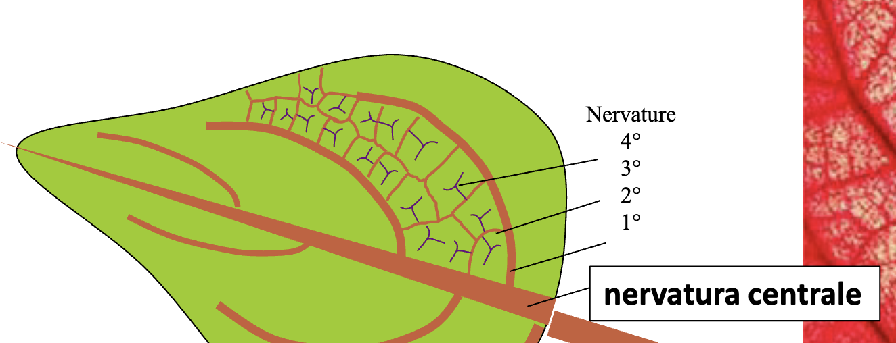
Monocotiledoni - Nervature Parallele
- Disposizione: nervature parallele di calibro simile
- Connessioni: piccole nervature trasversali
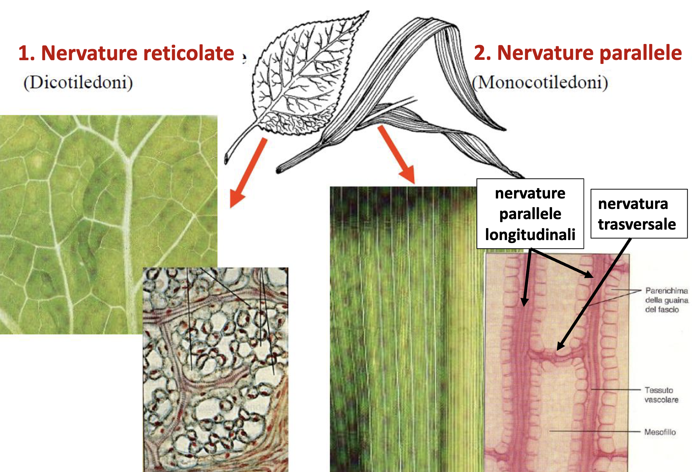
Gimnosperme - Nervature Dicotomiche
Ginkgo biloba: caratteristica unica
- Pattern: divisione dicotomica ripetuta
- Mantenimento: dimensioni costanti delle nervature
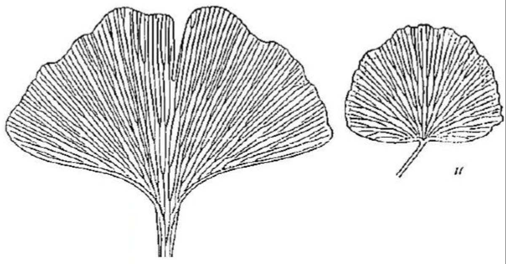
Collegamento Sistema Vascolare
- Origine: ramificazione fasci vascolari del fusto ai nodi
- Percorso: picciolo → nervatura principale → ramificazioni
- Orientamento: floema verso pagina inferiore, xilema superiore
- Tipo: fasci collaterali chiusi (anche dicotiledoni)
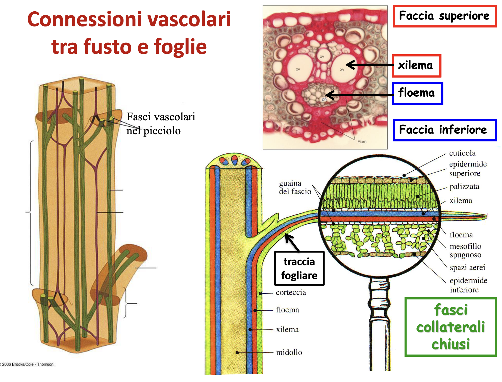
Abscissione Fogliare
Caratteristiche del Processo
- Programmazione: evento controllato geneticamente
- Timing: variabile geograficamente
- Climi temperati: autunno-inverno
- Zone tropicali: inizio stagione secca
Meccanismi Pre-Abscissione
Recupero Metaboliti
- Autofagia: degradazione controllata organelli
- Recupero: clorofille e materiali citoplasmatici
- Cambio colorazione: permanenza cromoplasti e antociani
Formazione Strati Specializzati
- Strato protettivo: accumulo suberina nella parete
- Blocco microorganismi
- Prevenzione perdita acqua
- Strato di abscissione: degradazione enzimatica pectina
- Scollamento cellulare
- Distacco senza rotture traumatiche
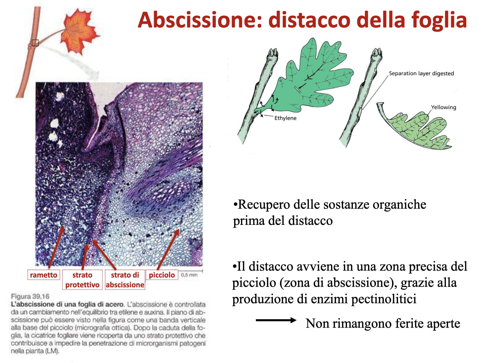
Controllo Ormonale
- Durante vita attiva: auxina mantiene strati inattivi
- Al momento abscissione:
- Diminuzione auxina
- Aumento etilene
- Attivazione strati protettivo e di abscissione
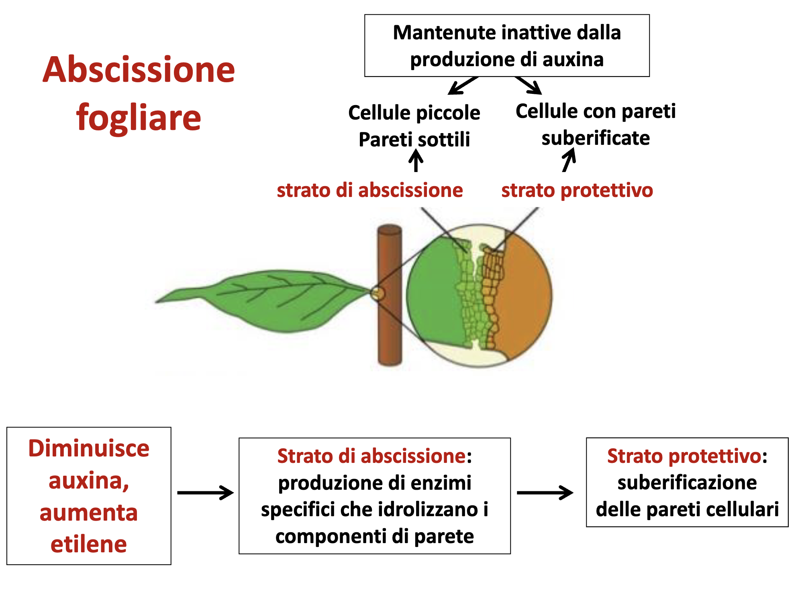
Sviluppo Fogliare
Origine Embriologica
- Cotiledoni: foglie embrionali (accumulo riserve)
- Nomofilli: foglie vere (fase post-embrionale)
- Sito formazione: meristema apicale germoglio (SAM)
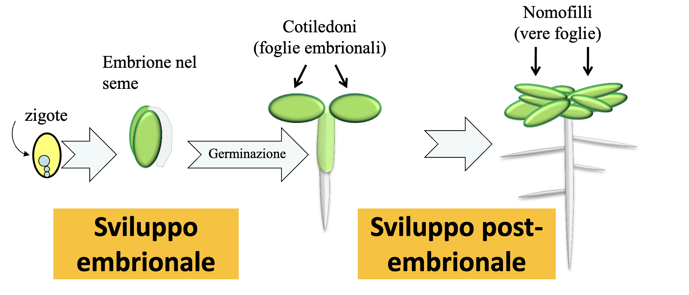
Teoria Tunica-Corpus
Contributo degli Strati
- Strato L1: divisioni anticlinali → protoderma
- Strato L2: divisioni anticlinali → tessuto fondamentale
- Strato L3 (corpus): divisioni anticlinali + periclinali → procambio
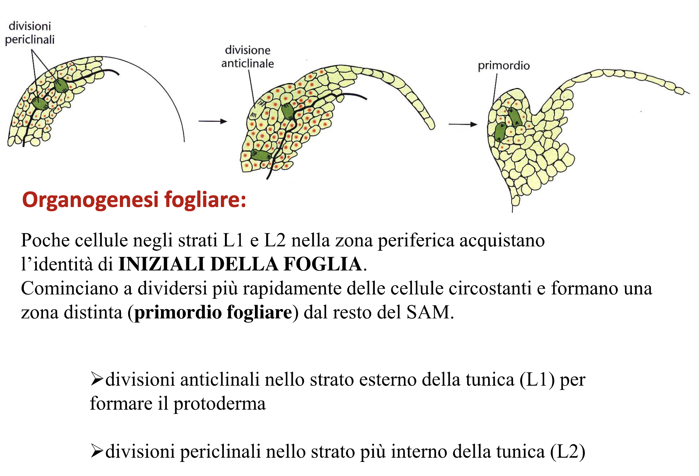
Formazione Primordio
- Innesco: divisioni periclinali in L2
- Ispessimento: zona precisa del SAM
- Origine esogena: porzione esterna meristema
- Sviluppo successivo: formazione gemma ascellare
Fillotassi (Disposizione Fogliare)
Determinazione genetica della posizione:
- Alterna: una per nodo, 180° sfasamento
- Spirale: posizione precisa rispetto precedente
- Opposta: due foglie per nodo, 90° tra livelli
- Verticillata: multiple foglie per nodo

Assi di Sviluppo Fogliare
Orientamenti Spaziali
- Prossimo-distale: dal picciolo all’apice
- Centro-laterale: da nervatura centrale al margine
- Adaxiale-abaxiale: da superficie superiore a inferiore
Sequenza Temporale
- Allungamento: sviluppo asse prossimo-distale
- Allargamento: sviluppo asse centro-laterale
- Ispessimento: sviluppo asse adaxiale-abaxiale
Meristema Determinato
- Attività limitata: cessazione al completamento foglia
- Eccezione: Welwitschia mirabilis (crescita continua)
Anatomia Fogliare
Organizzazione Generale
- Epidermide superiore + cuticola
- Mesofillo (tessuto interno)
- Epidermide inferiore + cuticola
- Nervature immerse nel mesofillo
Componenti del Mesofillo
- Tessuto fondamentale: parenchima fotosintetico
- Tessuti meccanici: collenchima e sclerenchima
- Guaina del fascio: strato parenchimatico attorno fasci
- Distribuzione stomatica: epidermidi con controllo specifico
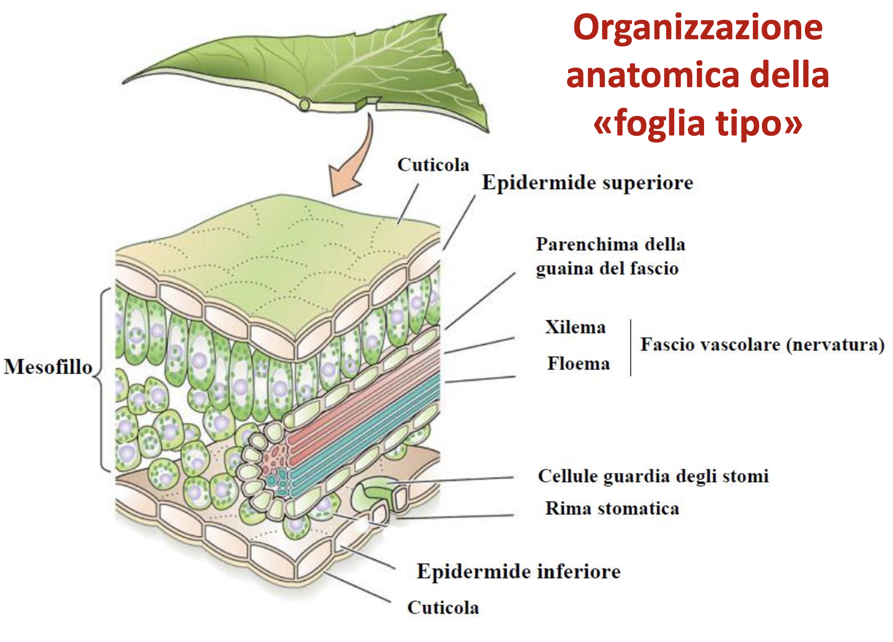
Modelli Organizzativi
1. Foglia Dorsoventrale/Bifacciale
Caratteristiche Generali
- Asimmetria: lato dorsale e ventrale distinguibili
- Portamento: plagiotropo (parallelo al suolo)
- Illuminazione: unidirezionale dall’alto
Organizzazione Interna
Parenchima a palizzata (superiore):
- Cellule allungate, parallelepipede
- Alta densità cloroplasti (100-150 per cellula)
- Tessuto fotosintetico principale
Parenchima spugnoso/lacunoso (inferiore):
- Ampi spazi intercellulari (aerenchima)
- Funzioni: diffusione gassosa + fotosintesi secondaria
Specializzazioni
- Epidermide superiore: cuticola spessa protettiva
- Distribuzione stomatica: prevalentemente inferiore
- Nervature: reticolate (dicotiledoni)
Plasticità Fenotipica: Foglie Sole vs Ombra
Foglie di sole:
- Multipli strati parenchima palizzata
- Cuticola molto spessa
- Maggiore resistenza stress
Foglie d’ombra:
- Singolo strato palizzata
- Cuticola sottile
- Ottimizzazione cattura luce
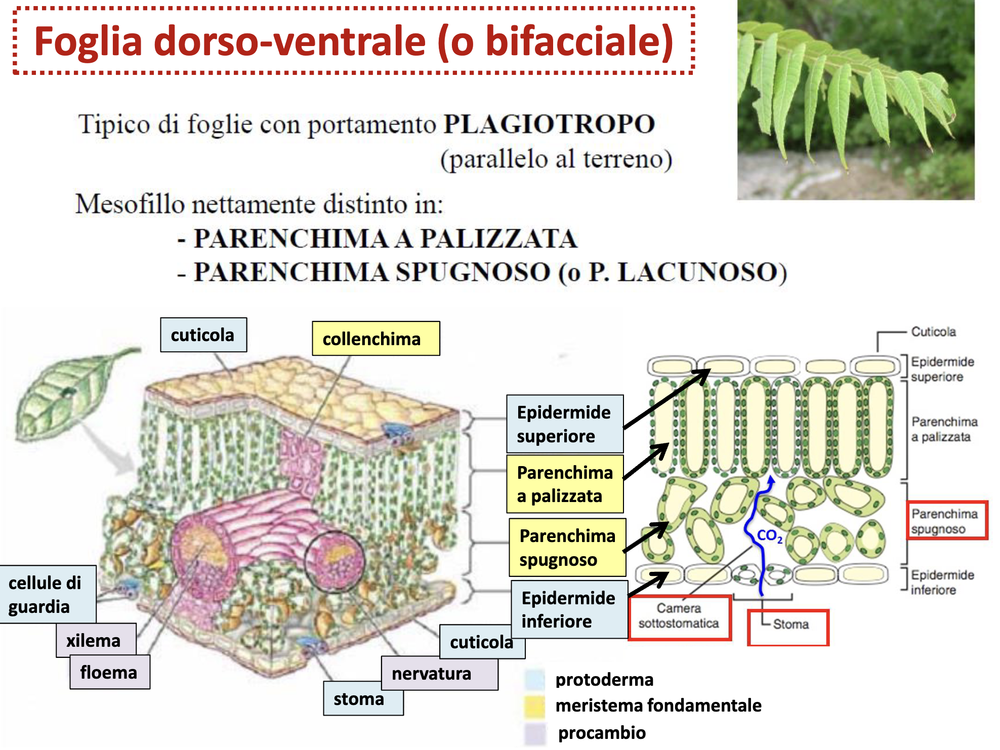 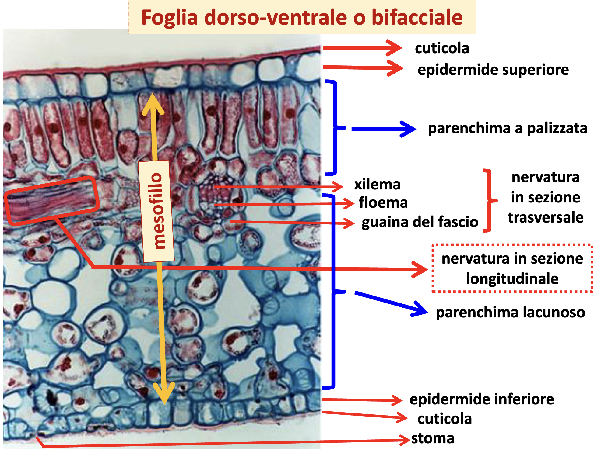
2. Foglia Equifacciale/Isofacciale
Caratteristiche Distintive
- Simmetria: due pagine identiche
- Anatomia: interna omogenea
- Portamento: ortotropo (perpendicolare terreno)
- Gruppi: principalmente monocotiledoni
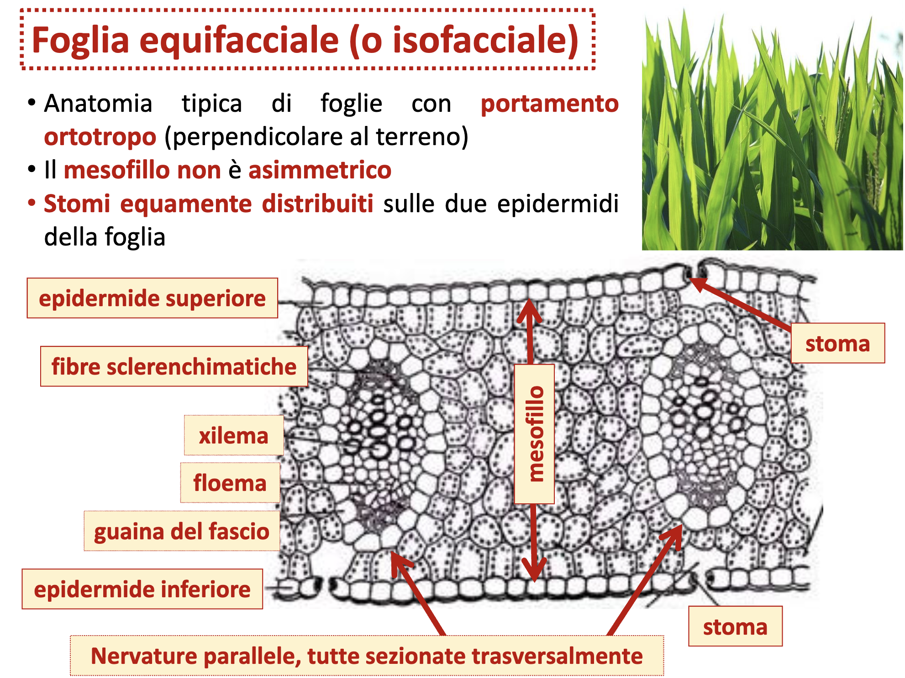
Organizzazione Strutturale
- Epidermidi: superiore e inferiore identiche
- Mesofillo: omogeneo senza asimmetria
- Stomi: distribuzione uniforme entrambe pagine
- Nervature: parallele (sezione trasversale)
Elementi di Riconoscimento
- Orientamento xilema: sempre verso epidermide superiore
- Orientamento floema: sempre verso epidermide inferiore
- Guaina fascio: molto evidente (piante C4)
- Cellule bulliformi: controllo apertura/chiusura lamina
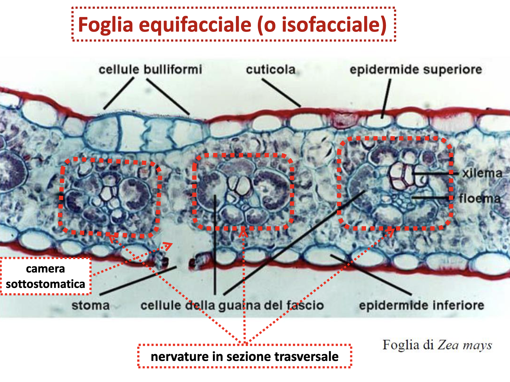
3. Foglia Unifacciale
Origine Morfogenetica
- Derivazione: ripiegamento foglia equifacciale
- Fusione: delle due metà lamina
- Esempio classico: Iris
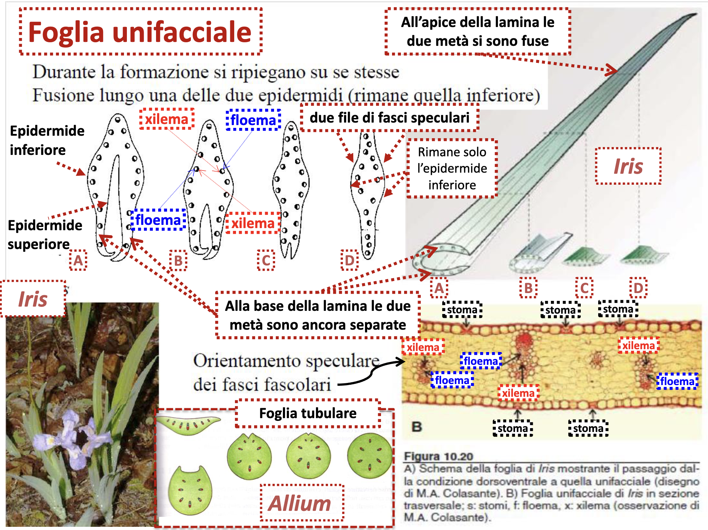
Caratteristiche Anatomiche
- Due file fasci vascolari: orientamento speculare
- Epidermide esposta: solo quella inferiore originaria
- Orientamento floema: verso esterno in entrambe file
Esempi Specializzati
Foglie tubulari: erba cipollina, cipolla, aglio
- Ripiegamento completo con fusione
- Solo epidermide inferiore esposta all’ambiente
4. Foglia Centrica
Caratteristiche Generali
- Gruppi: principalmente conifere (gimnosperme)
- Morfologia: aghiforme
- Adattamenti: ambienti xerici
- Nervatura: centrale unica
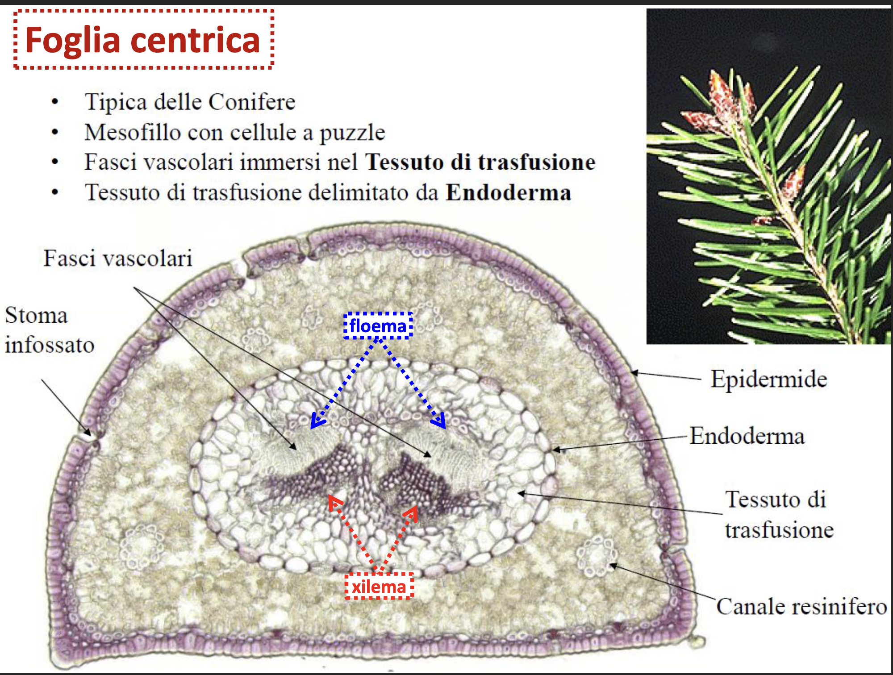
Adattamenti Xerofitici
- Dimensioni ridotte: limitazione superficie evaporante
- Stomi infossati: riduzione gradiente potenziale idrico
- Epidermide ispessita: cellule lignificate
- Mesofillo compatto: organizzazione “a puzzle”
- Canali resiniferi: carattere tassonomico
Organizzazione Centrale
- Due fasci collaterali: nella nervatura centrale
- Tessuto di trasfusione: circostante i fasci
- Endodermide: con bande del Caspary
- Controllo flussi: via simplastica obbligata
Funzione Tessuto di Trasfusione
- Mediazione: traslocazione acqua e nutrienti
- Filtro: passaggio obbligato mesofillo ↔ conduzione
- Controllo: mediante endodermide (come radice)
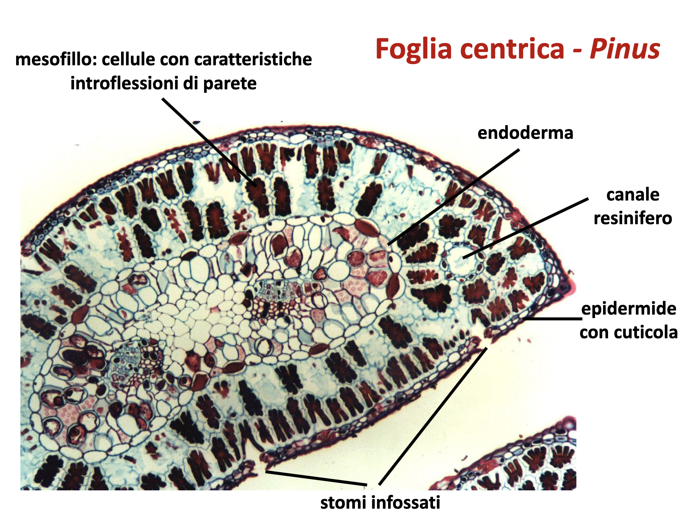
Adattamenti Ambientali
Xerofite (Ambienti Aridi)
Adattamenti Generali
- Tricomi protettivi: riduzione perdita acqua
- Cuticola ispessita: minimizzazione evaporazione
- Stomi infossati: controllo gradiente idrico
- Spazi intercellulari ridotti: limitazione evaporazione interna
Sclerofille (Macchia Mediterranea)
- Foglie coriacee: cuticola spessissima
- Tessuti meccanici: rigidità strutturale
Oleandro (Esempio Dettagliato)
Specializzazioni strutturali:
- Epidermide superiore pluristratificata
- Cripte stomatiche: invaginazioni epidermide inferiore
- Stomi raggruppati: all’interno delle cripte
- Tricomi interni: trattenimento umidità locale
- Doppio strato palizzata: alta luminosità
Idrofite (Ambienti Acquatici)
Foglie Galleggianti (Ninfea)
Adattamenti specifici:
- Struttura dorsoventrale: mantenuta
- Multipli strati palizzata: luce intensa superficiale
- Ampie lacune: parenchima spugnoso per galleggiamento
- Astrosclereidi: sostegno strutturale
- Stomi superiori: scambio gassoso efficiente
- Capacità portante: notevole nonostante lacune
Specializzazioni Funzionali
1. Funzione Protettiva
Protezione Meristemi
- Perule/Ipsofilli: foglie coriacee protezione gemme
- Caduta stagionale: alla ripresa vegetativa
Protezione Organi di Riserva
- Catafilli: foglie esterne bulbi (secche e coriacee)
- Protezione interna: foglie di riserva
Difesa da Erbivori
- Spine fogliari: trasformazione completa foglie
- Compensazione: fusti assumono funzione fotosintetica
2. Funzione di Sostegno
- Cirri: strutture apicali foglie composte
- Tigmotropismo: avvolgimento intorno sostegni
- Distinzione: da viticci (origine caulinare)
3. Funzione di Riserva
Tipologie
- Bulbi: foglie interne specializzate
- Cotiledoni: riserve embrionali
- Piante succulente: riserva idrica
- Ridotto rapporto superficie/volume
- Parenchima acquifero abbondante
4. Funzione Nutritiva
Assorbimento Acqua e Nutrienti
Epifite: foglie sostituiscono radici Bromeliacee:
- Disposizione a rosetta
- Cuticola sottile
- Accumulo acqua piovana
Piante Carnivore
Habitat: suoli poveri di azoto Strategia: digestione insetti per recupero azoto Tutte le trappole: modificazioni fogliari
Trappole Passive
Ascidi (Nepenthes, Sarracenia):
- Lamina richiusa in struttura tubulare
- Enzimi digestivi interni
Trappole Attive
Dionaea muscipula (meccanismo dettagliato):
- Cellule motrici turgide: lungo nervatura centrale
- Peli sensoriali: tre per metà lamina
- Attivazione: due peli toccati → perdita turgore → chiusura
- Digestione: tricomi ghiandolari secernono enzimi
- Riapertura: ripristino turgore cellule motrici
5. Funzione Riproduttiva
Riproduzione Asessuale
Kalanchoë: plantule marginali
- Mitosi da tessuti vegetativi
- Caduta e radicazione autonoma
Riproduzione Sessuale
Brattee fiorali: sostituzione petali per attrazione Bougainvillea e Poinsettia:
- Brattee pigmentate vistose
- Fiori veri piccoli e poco appariscenti
Adattamenti Metabolici
Problema della Fotorespirazione
Enzima Rubisco
Ribulosio 1,5-bisfosfato carbossilasi/ossigenasi:
- Attività carbossilasica: CO₂ + RuBP → 2 × 3-fosfoglicerato
- Attività ossigenasica: O₂ + RuBP → 3-fosfoglicerato + fosfoglicolato
Fotorespirazione
- Definizione: metabolismo parassita della fotosintesi
- Organelli coinvolti: cloroplasti, perossisomi, mitocondri
- Perdita resa: fino al 50% efficienza fotosintetica
- Condizioni favorenti: stomi chiusi, alta temperatura
Fotosintesi C4
Distribuzione Geografica
- Correlazione climatica: aridità e temperatura crescenti
- Pattern: verso interno continentale e latitudini più basse
- Dimostrazione: adattamento ambientale specifico
Enzima Chiave: PEP-Carbossilasi
- Localizzazione: citoplasma cellule mesofillo
- Reazione: fosfoenolpiruvato + CO₂ → ossalacetato → malato
- Caratteristica: SOLO attività carbossilasica
Anatomia Kranz
Modificazioni Strutturali
- Cellule guaina fascio: molto ingrandite
- Organizzazione: “corona” attorno fasci vascolari
- Nome: Kranz = corona (tedesco)
Espressione Enzimatica Differenziale
- PEP-carbossilasi: SOLO cellule mesofillo
- Rubisco: SOLO cellule guaina fascio
Specializzazioni Citologiche
Cellule Mesofillo
- Cloroplasti: normali con grana
- Fase luminosa: normale con produzione O₂
- Fase oscura: modificata con PEP-carbossilasi
Cellule Guaina Fascio
- Cloroplasti: SENZA grana
- Fotosistemi: solo FS1 (no produzione O₂)
- Fase oscura: normale con Rubisco
- Isolamento: parete suberificata
- Comunicazione: via simplastica (plasmodesmi)
Meccanismo Sistema Navetta
Ciclo Malato-Piruvato
- Mesofillo: CO₂ + PEP → malato
- Trasporto: malato → guaina fascio
- Decarboxilazione: malato → CO₂ + piruvato
- Ciclo Calvin: CO₂ + Rubisco → zuccheri
- Ritorno: piruvato → mesofillo (costo: 2 ATP)
Condizioni Ottimali Guaina Fascio
- Bassa [O₂]: no produzione da FS2
- Alta [CO₂]: rifornimento continuo da malato
- Isolamento: suberina rallenta diffusione
- Risultato: Rubisco funziona solo come carbossilasi
Analisi Costi-Benefici
Vantaggi
- Resa massima: condizioni normali
- Insensibilità: concentrazione CO₂ ambientale
- Eliminazione: fotorespirazione
Costi Energetici
- +2 ATP: per ciclo navetta
- Convenienza: ambienti molto soleggiati
- Limite: piante sottobosco (ATP limitato)
Distribuzione Ecologica
- Ottimale: ambienti aridi, caldi, illuminati
- Non conveniente: ambienti umidi, ombreggiati
- Spiegazione evoluzione: adattamento ambientale specifico
- Applicazioni: aumento artificiale CO₂ in serre per piante C3